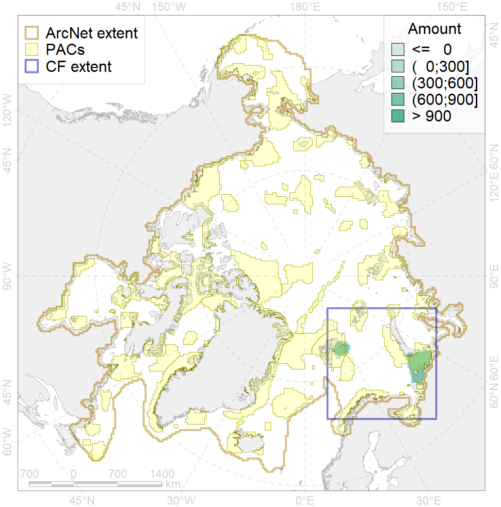
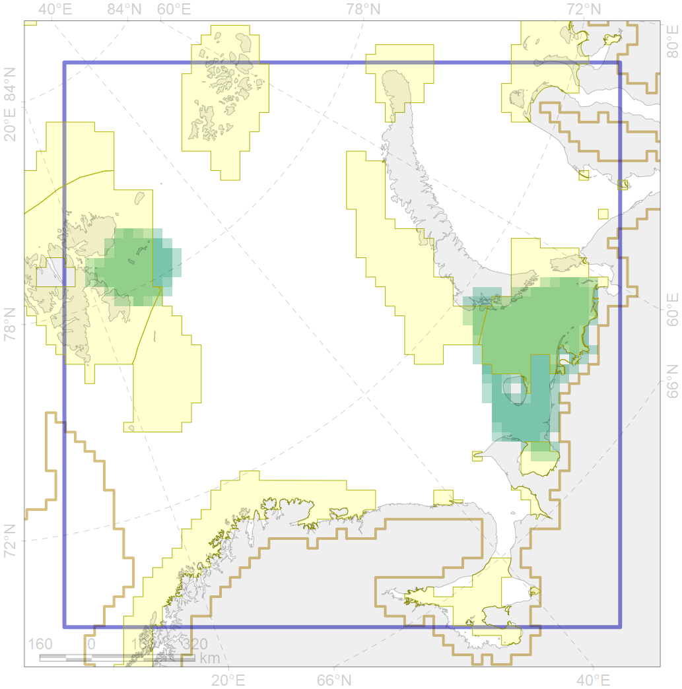

4039

| CF code | 4039 |
| CF name | Spawning areas of the Polar Cod (Boreogadus saida) in the Barents Sea |
| Time Period | 1980-2010 |
| Source(s) | Ajian A., Oganin I. A., Gjosæter H. 2011. |
| Seasonality | Feb-March |
| Depth Horizon | Spawn 0-50 m |
| Methodology | multiple source, published field data |
| Use Restrictions | Open sources |
| Author Name | N. Chernova |
| Notes | |
| Scenario’s Target | 0.48 |
| Target Achievement | 0.716 (Scenario: 149.1%) |
| PAC | Share of the Total Amount within the PAC | Share of the Target Achievement for the ArcNet | PAC’s Contribution to the Target Achievement |
|---|---|---|---|
| 20 | 46.4%49.3% | 94.0%99.6% | 63.1%66.8% |
| 21 | 2.3%4.0% | 4.8%8.2% | 3.2%5.5% |
| 23 | 1.5%1.5% | 2.3%2.4% | 1.6%1.6% |
| 30 | 19.5%19.7% | 40.1%40.3% | 26.9%27.1% |
| 31 | 0.1%0.5% | 0.2%0.7% | 0.1%0.5% |
| inner | 69.9%75.0% | 141.5%151.2% | 94.9%101.4% |
| outer | 30.1%40.4% | 7.6%26.7% | 5.1%17.9% |
| † supplement values are for area consistence whereas principal values are for Accenter compatible gridded stats |